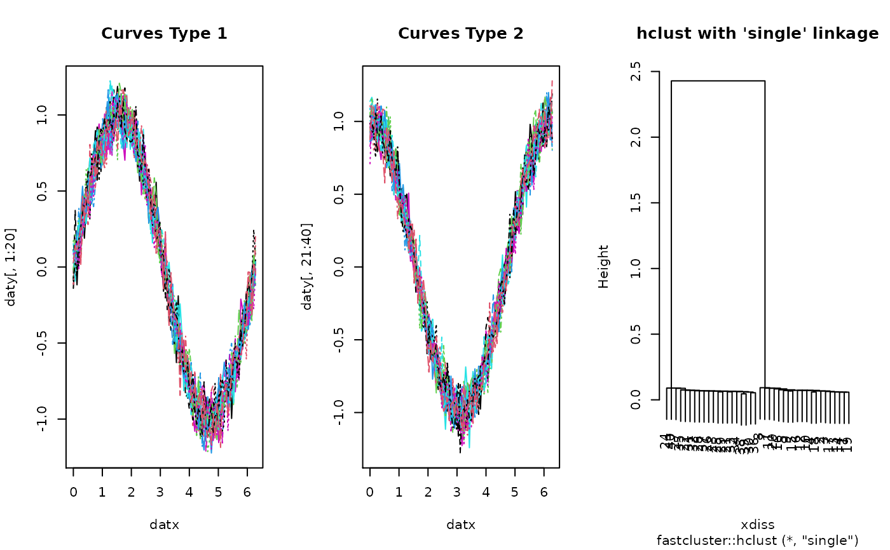

Given \(N\) curves \(\gamma_1 (t), \gamma_2 (t), \ldots, \gamma_N (t) : I \rightarrow \mathbf{R}\), perform hierarchical agglomerative clustering with fastcluster package's implementation of the algorithm. Dissimilarity for curves is measured by \(L_p\) metric.
funhclust( fdobj, p = 2, method = c("single", "complete", "average", "mcquitty", "ward.D", "ward.D2", "centroid", "median"), members = NULL )
| fdobj | a |
|---|---|
| p | an exponent in \(L_p\) formalism (default: 2). |
| method | agglomeration method to be used. This must be one of |
| members |
|
an object of class hclust. See hclust for details.
Ferreira L, Hitchcock DB (2009). “A Comparison of Hierarchical Methods for Clustering Functional Data.” Communications in Statistics - Simulation and Computation, 38(9), 1925--1949. ISSN 0361-0918, 1532-4141, doi: 10.1080/03610910903168603 .
# ------------------------------------------------------------- # two types of curves # # type 1 : sin(x) + perturbation; 20 OF THESE ON [0, 2*PI] # type 2 : cos(x) + perturbation; 20 OF THESE ON [0, 2*PI] # ------------------------------------------------------------- ## PREPARE : USE 'fda' PACKAGE # Generate Raw Data datx = seq(from=0, to=2*pi, length.out=100) daty = array(0,c(100, 40)) for (i in 1:20){ daty[,i] = sin(datx) + rnorm(100, sd=0.1) daty[,i+20] = cos(datx) + rnorm(100, sd=0.1) } # Wrap as 'fd' object mybasis <- fda::create.bspline.basis(c(0,2*pi), nbasis=10) myfdobj <- fda::smooth.basis(datx, daty, mybasis)$fd ## RUN THE ALGORITHM hcsingle = funhclust(myfdobj, method="single") ## VISUALIZE opar <- par(no.readonly=TRUE) par(mfrow=c(1,3)) matplot(datx, daty[,1:20], type="l", main="Curves Type 1") matplot(datx, daty[,21:40], type="l", main="Curves Type 2") plot(hcsingle, main="hclust with 'single' linkage")